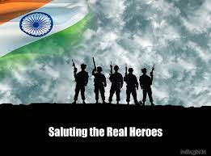

Tribute to Indian Army

Saluting to Real Heroes
Why we should be thankful to Indian Army
- The Indian Army is one of the most formidable fighting forces in the world, known for its bravery, professionalism, and dedication to duty. Its soldiers are among the most selfless and courageous individuals, who put their lives on the line every day to protect the sovereignty and integrity of their country.
- From the freezing heights of the Himalayas to the scorching deserts of Rajasthan, from the dense forests of the Northeast to the rugged terrain of Jammu and Kashmir, the Indian Army has always risen to the occasion to defend the nation against all threats.
- The Indian Army has a rich history of valour and sacrifice, from the gallant soldiers who fought in the World Wars to the heroes of the Kargil War, who displayed extraordinary courage and determination in the face of overwhelming odds.
- The Indian Army is not just a fighting force, but also a symbol of hope and inspiration for the people of India. Its soldiers are role models for millions of young Indians, who aspire to serve their country with the same dedication and commitment.
- We owe a debt of gratitude to the Indian Army and its brave soldiers, who risk their lives every day to keep us safe and secure. They are the true guardians of our nation, and we salute their selfless service and unwavering commitment to duty.